פתרון מלא ל־14 שאלות החשבון הדיפרנציאלי בעבודת הקיץ: 7 שאלות על פולינומים ו־7 שאלות על פונקציות רציונליות. בכל סעיף מוסבר איך מגיעים לפתרון, ומתחתיו מופיעים הכללים שבהם השתמשנו. לחיצה על שם של כלל מובילה להסבר שלו בארגז הכלים. בסעיפי השרטוט מצורף גרף מדויק.
\((x^{n})' = nx^{n-1}\), ונגזרת של סכום היא סכום הנגזרות. כלל המכפלה: \((uv)' = u'v + uv'\). כלל המנה: \(\left(\dfrac{u}{v}\right)' = \dfrac{u'v - uv'}{v^{2}}\). וגם \(\left[(ax+b)^{n}\right]' = na(ax+b)^{n-1}\).
שיפוע המשיק לגרף בנקודה \(x_{0}\) שווה ל־\(f'(x_{0})\).
מחפשים נקודות שבהן \(f'(x)=0\), ובודקים בטבלה את סימן הנגזרת משני הצדדים. מעבר מ־\(-\) ל־\(+\) הוא מינימום, ומעבר מ־\(+\) ל־\(-\) הוא מקסימום. אם הסימן לא מתחלף, אין קיצון בנקודה.
היכן ש־\(f'(x)>0\) הפונקציה עולה, והיכן ש־\(f'(x)<0\) היא יורדת. אם נתון \(h'(x)=f(x)\), אז סימן \(f\) קובע היכן \(h\) עולה ויורדת.
משווים את ערכי הפונקציה בנקודות הקיצון שבתוך הקטע ובקצות הקטע. הגדול ביותר הוא המקסימום המוחלט, והקטן ביותר הוא המינימום המוחלט.
חיתוך עם ציר \(x\): פותרים \(f(x)=0\). בשבר, המונה מתאפס והמכנה לא. חיתוך עם ציר \(y\): מציבים \(x=0\), אם 0 בתחום ההגדרה.
פולינום מוגדר לכל \(x\). בפונקציה רציונלית מוציאים מהתחום את הנקודות שבהן המכנה מתאפס.
אם המכנה מתאפס ב־\(x=c\) והמונה לא, הישר \(x=c\) הוא אסימפטוטה אנכית. אם גם המונה מתאפס שם והגורם מצטמצם, בנקודה יש "חור", כלומר נקודת אי־רציפות סליקה, ולא אסימפטוטה.
כשמעלת המונה קטנה ממעלת המכנה, האסימפטוטה היא \(y=0\). כשהמעלות שוות, \(y=\) המנה של המקדמים המובילים.
אם \(f(-x)=f(x)\), הפונקציה זוגית והגרף סימטרי לציר \(y\). אם \(f(-x)=-f(x)\), היא אי־זוגית והגרף סימטרי לראשית.
\(f(x)+n\) מזיז את הגרף \(n\) למעלה. \(f(x+k)\) מזיז \(k\) שמאלה. \(c\cdot f(x)\) לא משנה את נקודות האפס ואת שיעורי ה־x של הקיצון, ואם \(c<0\) מקסימום הופך למינימום. \(-f(x)\) הוא שיקוף בציר \(x\), ו־\(-f(-x)\) הוא סיבוב ב־180° סביב הראשית.
התוצאות הסופיות, לבדיקה מהירה. הוכחות ושרטוטים מופיעים בפתרון המלא.
| שאלה | תשובות |
|---|---|
| פולינום 1 | \(a=1\) · \((0,0),(-3,0)\) · מינ' \((-3,0)\), מקס' \((-1,4)\) · עבור \(a=-2\): מקס' מוחלט \((1,68)\), מינ' מוחלט \((-1,-80)\), עוברת בראשית |
| פולינום 2 | \((\tfrac15,0),(\pm3,0),(0,9)\), \(a=-1\), \(b=9\) · מקס' \((-\tfrac53,\tfrac{49}{3})\), מינ' \((\tfrac95,-\tfrac{324}{25})\) · \(k=-\tfrac53\), \(n=-\tfrac{49}{3}\), מינ' של h: \((\tfrac{52}{15},-\tfrac{2197}{75})\) |
| פולינום 3 | מינ' \((\pm3,0)\), מקס' \((0,81)\) · \(f\cdot f'>0\) עבור \(-3<x<0\) או \(x>3\) · h עולה לכל x |
| פולינום 4 | מינ' \((1,-27)\), ב־\(x=-2\) אין קיצון · \(p=-2\) · מרחק 81 |
| פולינום 5 | \(a=4\) · מינ' \((1,-27)\), ב־\(x=4\) אין קיצון · \(g'>0\) עבור \(x<1\) |
| פולינום 6 | מקס' \((\pm5,576)\), מינ' \((0,-49)\), זוגית · חיתוך \((\pm2,135),(\pm6,455)\) · שטח 2405 |
| פולינום 7 | \(b=-27\), \(c=54\) · מקס' \((-3,108)\), מינ' \((3,0)\) · ל־g: מקס' מוחלט \((0,108)\), מינ' מוחלט \((3,0)\) |
| רציונלית 1 | \(x=1.5\), \(x=5\) · \((1,0),(6,0),(0,\tfrac85)\) · מקס' \((-9,\tfrac{100}{49})\), מינ' \((3,4)\) |
| רציונלית 2 | \(x\neq\pm1\) · \(x=\pm1\), \(y=2\) · מינ' \((0,0)\) · \((\pm\tfrac{\sqrt2}{2},2)\) · \(c=1\) |
| רציונלית 3 | \(a=-1\) · מקס' של g: \((\tfrac12,-\tfrac{15}{8})\) · ל־h מקס' ב־\(x=\tfrac12\) |
| רציונלית 4 | \(x\neq1,9\), \(x=1\), \(x=9\), \(y=0\) · \(b=10\), \(n=16\) · מינ' \((7,4)\), מקס' \((13,1)\) |
| רציונלית 5 | \(k=7\) או \(k=11\) · מינ' \((11,0)\), \(y=n\) · \(n=3\) · \(L=0,12,48\) |
| רציונלית 6 | \(a=-5\), \(b=4\) · \(x=0\) · \((\pm1,0)\) · מקס' \((\sqrt3,\tfrac{2\sqrt3}{9})\), מינ' \((-\sqrt3,-\tfrac{2\sqrt3}{9})\) · 4 פתרונות: \(k=\tfrac38\) או \(k=\tfrac{2\sqrt3}{9}\) |
| רציונלית 7 | \(x\neq3\), \(x=3\) · \((2,0),(0,-\tfrac43)\) · מקס' \((2,0)\), מינ' \((4,4)\) · g עולה ב־\(1<x<2.5\) וב־\(x>3\) |
\(f(x) = -ax^{3} - 6x^{2} - 9a^{3}x\) כאשר \(a<0\). שיפוע המשיק לגרף בנקודה \(x=0\) הוא \(-9\).
גוזרים: \(f'(x) = -3ax^{2} - 12x - 9a^{3}\). מציבים \(x=0\): \(f'(0) = -9a^{3}\).
שיפוע המשיק הוא \(-9\): \(-9a^{3} = -9 \Rightarrow a^{3} = 1 \Rightarrow a = 1\).
\(a=1\)
שימוש ב: כללי גזירהשיפוע המשיק
(1) חיתוך עם הצירים. מוציאים גורם משותף: \(f(x) = -x(x^{2}+6x+9) = -x(x+3)^{2}\).
\(f(x)=0 \Rightarrow x=0\) או \(x=-3\). חיתוך עם ציר \(y\): \(f(0)=0\).
(2) נקודות קיצון. \(f'(x) = -3x^{2} - 12x - 9 = -3(x^{2}+4x+3) = -3(x+1)(x+3)\), ולכן \(f'(x)=0\) ב־\(x=-3\) וב־\(x=-1\).
| x | \(x<-3\) | \(-3\) | \(-3<x<-1\) | \(-1\) | \(x>-1\) |
|---|---|---|---|---|---|
| f′ | − | 0 | + | 0 | − |
| f | ↘ | מינ' | ↗ | מקס' | ↘ |
\(f(-3) = 27 - 54 + 27 = 0\), \(f(-1) = 1 - 6 + 9 = 4\).
\((0,0)\), \((-3,0)\) · מינימום \((-3,0)\), מקסימום \((-1,4)\)
הפונקציה יורדת עד \(x=-3\), נוגעת בציר \(x\) במינימום, עולה עד המקסימום \((-1,4)\), ואז יורדת וחוצה את הראשית. המקדם המוביל שלילי, ולכן משמאל הגרף שואף ל־\(+\infty\) ומימין ל־\(-\infty\).
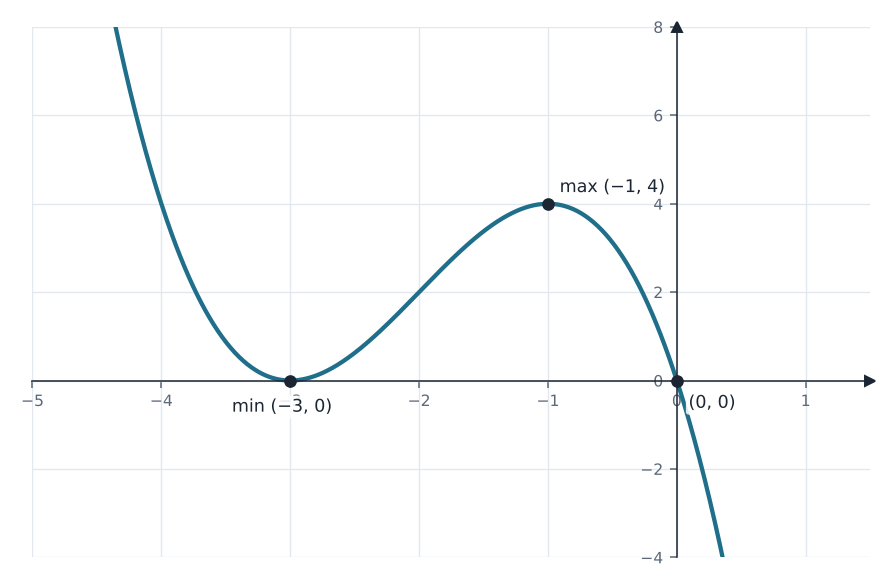
\(f(x) = 2x^{3} - 6x^{2} - 9(-8)x = 2x^{3} - 6x^{2} + 72x\).
(1) קיצון מוחלט ב־\([-1,1]\). \(f'(x) = 6x^{2} - 12x + 72 = 6(x^{2} - 2x + 12)\). הדיסקרימיננטה \(4 - 48 < 0\) והמקדם המוביל חיובי, ולכן \(f'(x)>0\) לכל \(x\): הפונקציה עולה תמיד ואין לה נקודות קיצון פנימיות.
לכן הקיצון המוחלט נמצא בקצות הקטע: \(f(-1) = -2 - 6 - 72 = -80\), \(f(1) = 2 - 6 + 72 = 68\).
(2) מעבר בראשית. \(f(0) = 0\), ולכן כן. למעשה זה נכון לכל \(a\), כי לפונקציה אין איבר חופשי.
מקסימום מוחלט \((1,68)\), מינימום מוחלט \((-1,-80)\) · כן, עוברת בראשית
שימוש ב: עלייה וירידהקיצון מוחלט בקטע סגור
\(f(x) = 5x^{3} + ax^{2} - 45x + b\) כאשר \(a,b\) פרמטרים.
(1) חיתוך עם הצירים. \(5x-1=0 \Rightarrow x=\dfrac15\), ו־\(x^{2}-9=0 \Rightarrow x=\pm3\). ציר \(y\): \(f(0) = (-1)(-9) = 9\).
(2) הפרמטרים. פותחים סוגריים: \((5x-1)(x^{2}-9) = 5x^{3} - x^{2} - 45x + 9\), ומשווים מקדמים.
\((\tfrac15,0)\), \((3,0)\), \((-3,0)\), \((0,9)\) · \(a=-1\), \(b=9\)
שימוש ב: חיתוך עם הצירים
(1) \(g(x)=0 \Leftrightarrow \dfrac{9}{32}f(x) = 0 \Leftrightarrow f(x)=0\), כי \(\dfrac{9}{32}\neq0\). לכן נקודות החיתוך עם ציר \(x\) זהות: \(x = -3,\ \tfrac15,\ 3\).
(2) נקודות קיצון. \(g'(x) = \dfrac{9}{32}f'(x) = \dfrac{9}{32}(15x^{2} - 2x - 45) = \dfrac{9}{32}(3x+5)(5x-9)\).
\(g'(x)=0 \Rightarrow x = -\dfrac53\) או \(x = \dfrac95\). זו פרבולה "מחייכת", ולכן \(g'\) חיובית מחוץ לשורשים ושלילית ביניהם.
| x | \(x<-\tfrac53\) | \(-\tfrac53\) | \(-\tfrac53<x<\tfrac95\) | \(\tfrac95\) | \(x>\tfrac95\) |
|---|---|---|---|---|---|
| g′ | + | 0 | − | 0 | + |
| g | ↗ | מקס' | ↘ | מינ' | ↗ |
\(f(-\tfrac53) = (-\tfrac{28}{3})(-\tfrac{56}{9}) = \dfrac{1568}{27}\), ולכן \(g(-\tfrac53) = \dfrac{9}{32}\cdot\dfrac{1568}{27} = \dfrac{49}{3}\).
\(f(\tfrac95) = 8\cdot(-\tfrac{144}{25})\), ולכן \(g(\tfrac95) = \dfrac{9}{32}\cdot\left(-\dfrac{1152}{25}\right) = -\dfrac{324}{25}\).
(3) סקיצה. שלוש נקודות אפס, חיתוך עם ציר \(y\) ב־\(g(0) = \tfrac{9}{32}\cdot9 = \tfrac{81}{32}\), מקסימום ואחריו מינימום.
מקסימום \((-\tfrac53,\tfrac{49}{3})\), מינימום \((\tfrac95,-\tfrac{324}{25})\)
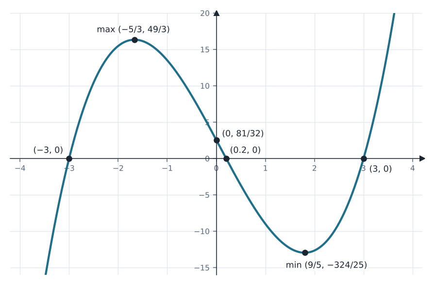
שימוש ב: מתיחה c·f(x)כללי גזירהנקודות קיצון
(1) הגרף של \(h\) הוא הגרף של \(g\) מוזז \(k\) יחידות שמאלה ו־\(n\) יחידות למעלה. סוג הקיצון לא משתנה בהזזה, ולכן המקסימום \((-\tfrac53,\tfrac{49}{3})\) עובר לראשית:
\(-\tfrac53 - k = 0 \Rightarrow k = -\tfrac53\), ו־\(\tfrac{49}{3} + n = 0 \Rightarrow n = -\tfrac{49}{3}\).
(2) המינימום \((\tfrac95,-\tfrac{324}{25})\) עובר באותה הזזה: \(x = \tfrac95 + \tfrac53 = \tfrac{52}{15}\), \(y = -\tfrac{324}{25} - \tfrac{49}{3} = -\tfrac{2197}{75}\).
(3) \(-h(-x)\) מתקבלת משיקוף בציר \(y\) (סוג הקיצון נשמר) ואז שיקוף בציר \(x\) (מקסימום הופך למינימום). כל נקודה \((x,y)\) עוברת ל־\((-x,-y)\):
המקסימום \((0,0)\) הופך למינימום \((0,0)\), והמינימום \((\tfrac{52}{15},-\tfrac{2197}{75})\) הופך למקסימום \((-\tfrac{52}{15},\tfrac{2197}{75})\).
\(k=-\tfrac53\), \(n=-\tfrac{49}{3}\) · מינימום של h: \((\tfrac{52}{15},-\tfrac{2197}{75})\) · ל־\(-h(-x)\): מינ' \((0,0)\), מקס' \((-\tfrac{52}{15},\tfrac{2197}{75})\)
שימוש ב: הזזות ושיקופים
\(f(x) = (x^{2}-9)^{2}\).
\(f(x)=0 \Leftrightarrow x^{2}=9 \Leftrightarrow x=\pm3\). \(f(0) = (-9)^{2} = 81\).
\((-3,0)\), \((3,0)\), \((0,81)\)
שימוש ב: חיתוך עם הצירים
לפי כלל השרשרת: \(f'(x) = 2(x^{2}-9)\cdot 2x = 4x(x-3)(x+3)\). מתאפסת ב־\(x = -3,\ 0,\ 3\).
| x | \(x<-3\) | \(-3\) | \(-3<x<0\) | \(0\) | \(0<x<3\) | \(3\) | \(x>3\) |
|---|---|---|---|---|---|---|---|
| f′ | − | 0 | + | 0 | − | 0 | + |
| f | ↘ | מינ' | ↗ | מקס' | ↘ | מינ' | ↗ |
מינימום \((-3,0)\) ו־\((3,0)\), מקסימום \((0,81)\)
שימוש ב: כללי גזירהנקודות קיצון
צורת "W": שתי נקודות מינימום על ציר \(x\) ומקסימום על ציר \(y\). הגרף סימטרי לציר \(y\) ואף פעם לא יורד מתחת לציר \(x\).
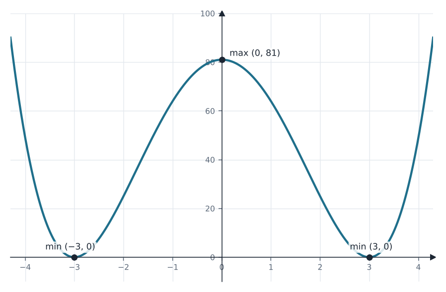
מסעיף ב: \(f'(x) = 4x(x-3)(x+3) = 0\) ב־\(x=-3,0,3\).
\((-3,0)\), \((0,0)\), \((3,0)\)
\(f(x) = (x^{2}-9)^{2} \ge 0\), ומתאפסת רק ב־\(x=\pm3\). לכן המכפלה חיובית בדיוק כאשר \(f'(x) > 0\) (ו־\(x\neq\pm3\)).
מטבלת הסימנים: \(f'(x)>0\) עבור \(-3<x<0\) או \(x>3\).
\(-3<x<0\) או \(x>3\)
\(h'(x) = (x^{2}-9)^{2} \ge 0\) לכל \(x\), ומתאפסת רק בשתי נקודות בודדות (\(x=\pm3\)) בלי להחליף סימן. לכן \(h\) עולה לכל \(x\) ואין לה תחום ירידה.
\(h\) עולה לכל \(x\), אין תחום ירידה
שימוש ב: h′ = f
\(f(x) = (x-2)\cdot(x+2)^{3}\).
\(f(x)=0 \Rightarrow x=2\) או \(x=-2\). \(f(0) = (-2)\cdot 8 = -16\).
\((2,0)\), \((-2,0)\), \((0,-16)\)
כלל המכפלה: \(f'(x) = 1\cdot(x+2)^{3} + (x-2)\cdot3(x+2)^{2}\).
מוציאים \((x+2)^{2}\): \(f'(x) = (x+2)^{2}\left[(x+2) + 3(x-2)\right] = (x+2)^{2}(4x-4) = 4(x+2)^{2}(x-1)\).
\(f'(x)=0\) ב־\(x=-2\) וב־\(x=1\). הגורם \((x+2)^{2}\) אינו שלילי, ולכן הסימן נקבע לפי \(x-1\):
| x | \(x<-2\) | \(-2\) | \(-2<x<1\) | \(1\) | \(x>1\) |
|---|---|---|---|---|---|
| f′ | − | 0 | − | 0 | + |
| f | ↘ | אין קיצון | ↘ | מינ' | ↗ |
ב־\(x=-2\) הנגזרת מתאפסת אבל לא מחליפה סימן, ולכן זו אינה נקודת קיצון. \(f(1) = (-1)\cdot27 = -27\).
מינימום \((1,-27)\) (ב־\((-2,0)\) אין קיצון)
שימוש ב: כלל המכפלהנקודות קיצון
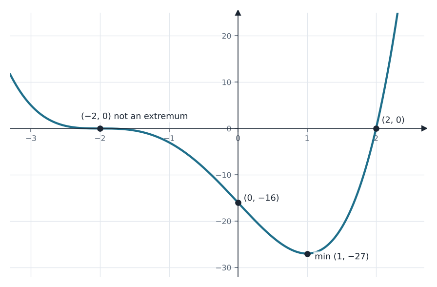
השלמה: בסעיף (2) נעלם שם הציר. הפתרון נותן את נקודות החיתוך עם שני הצירים.
(1) \(h'(x) = p\cdot f'(x)\), ו־\(f'(0) = 4\cdot 4\cdot(-1) = -16\). לכן \(-16p = 32 \Rightarrow p = -2\).
(2) \(h(x) = -2f(x)\) מתאפסת בדיוק היכן ש־\(f\) מתאפסת: \((-2,0)\), \((2,0)\). עם ציר \(y\): \(h(0) = -2\cdot(-16) = 32\).
(3) כפל במספר שלילי הופך מינימום למקסימום, ולכן המינימום \((1,-27)\) של \(f\) הופך למקסימום של \(h\): \((1,\ -2\cdot(-27)) = (1,54)\).
לשתי הנקודות אותו שיעור \(x\), ולכן המרחק ביניהן הוא \(54 - (-27) = 81\).
\(p=-2\) · \((\pm2,0)\), \((0,32)\) · מרחק 81
שימוש ב: שיפוע המשיקc·f(x) עם c שלילי
\(f(x) = x(x-a)^{3}\), והנקודה \((5,5)\) על הגרף.
השלמה: בקובץ נעלם שם הפרמטר אחרי "מצאו את".
\(f(5) = 5(5-a)^{3} = 5 \Rightarrow (5-a)^{3} = 1 \Rightarrow 5-a = 1 \Rightarrow a = 4\).
\(a=4\), כלומר \(f(x) = x(x-4)^{3}\)
\(x(x-4)^{3} = 0 \Rightarrow x=0\) או \(x=4\). החיתוך עם ציר \(y\) הוא הראשית.
\((0,0)\), \((4,0)\)
\(f'(x) = (x-4)^{3} + x\cdot3(x-4)^{2} = (x-4)^{2}(x - 4 + 3x) = 4(x-1)(x-4)^{2}\).
\(f'(x)=0\) ב־\(x=1\) (\(f(1) = 1\cdot(-3)^{3} = -27\)) וב־\(x=4\) (\(f(4)=0\)).
\((1,-27)\), \((4,0)\)
שימוש ב: כלל המכפלה
\((x-4)^{2}\ge0\), ולכן הסימן של \(f'\) נקבע לפי \(x-1\):
| x | \(x<1\) | \(1\) | \(1<x<4\) | \(4\) | \(x>4\) |
|---|---|---|---|---|---|
| f′ | − | 0 | + | 0 | + |
| f | ↘ | מינ' | ↗ | אין קיצון | ↗ |
מינימום \((1,-27)\). ב־\((4,0)\) אין קיצון
שימוש ב: נקודות קיצון
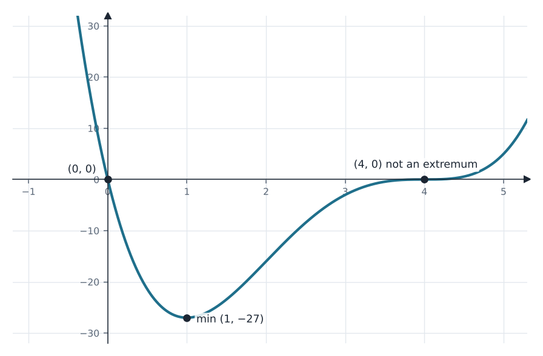
(1) שיקוף של \(f\) בציר \(x\): המינימום \((1,-27)\) הופך למקסימום \((1,27)\), ונקודות האפס נשארות.
(2) \(g'(x) = -f'(x) = -4(x-1)(x-4)^{2}\). הסימנים הפוכים לטבלה של סעיף ד.
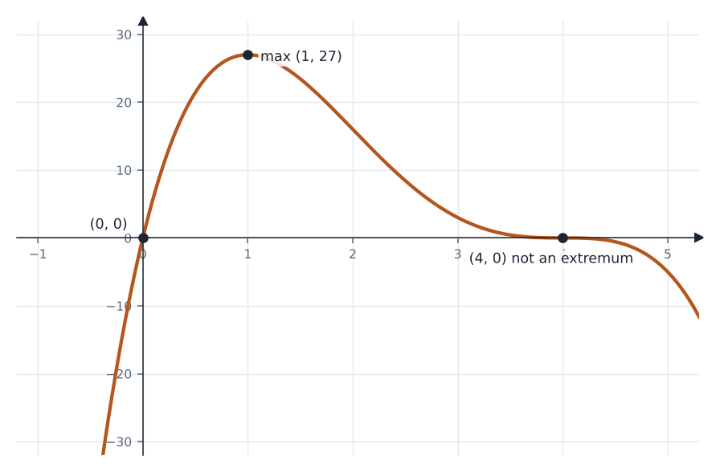
\(g'(x)>0\) עבור \(x<1\) · \(g'(x)<0\) עבור \(1<x<4\) ו־\(x>4\)
שימוש ב: שיקוף −f(x)
\(f(x) = (x^{2}-1)(49-x^{2})\) מוגדרת לכל \(x\), ו־\(g(x) = 10x^{2} + 95\).
\(x^{2}=1 \Rightarrow x=\pm1\), \(x^{2}=49 \Rightarrow x=\pm7\). \(f(0) = (-1)\cdot49 = -49\).
\((\pm1,0)\), \((\pm7,0)\), \((0,-49)\)
פותחים סוגריים: \(f(x) = -x^{4} + 50x^{2} - 49\), ולכן \(f'(x) = -4x^{3} + 100x = -4x(x-5)(x+5)\).
| x | \(x<-5\) | \(-5\) | \(-5<x<0\) | \(0\) | \(0<x<5\) | \(5\) | \(x>5\) |
|---|---|---|---|---|---|---|---|
| f′ | + | 0 | − | 0 | + | 0 | − |
| f | ↗ | מקס' | ↘ | מינ' | ↗ | מקס' | ↘ |
\(f(\pm5) = 24\cdot24 = 576\), \(f(0) = -49\).
מקסימום \((-5,576)\) ו־\((5,576)\), מינימום \((0,-49)\)
שימוש ב: כללי גזירהנקודות קיצון
\(f(-x) = ((-x)^{2}-1)(49-(-x)^{2}) = (x^{2}-1)(49-x^{2}) = f(x)\). בפונקציה מופיעות רק חזקות זוגיות של \(x\).
זוגית (הגרף סימטרי לציר \(y\))
שימוש ב: זוגית ואי־זוגית
\(-x^{4} + 50x^{2} - 49 = 10x^{2} + 95 \Rightarrow x^{4} - 40x^{2} + 144 = 0\).
מציבים \(t = x^{2}\): \(t^{2} - 40t + 144 = 0 \Rightarrow t = 4\) או \(t = 36\), ולכן \(x = \pm2,\ \pm6\).
\(g(\pm2) = 135\), \(g(\pm6) = 455\).
\((-6,455)\), \((-2,135)\), \((2,135)\), \((6,455)\)
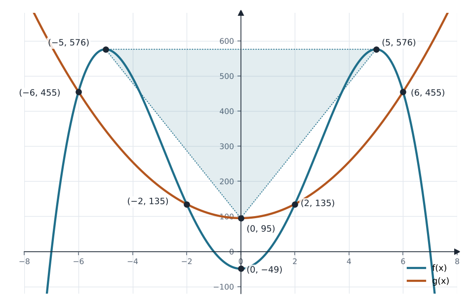
\(g'(x) = 20x = 0 \Rightarrow x=0\), ולכן המינימום של \(g\) הוא \((0,95)\).
קדקודי המשולש: \((-5,576)\), \((5,576)\), \((0,95)\). הבסיס אופקי, באורך \(10\), והגובה הוא \(576 - 95 = 481\).
\(S = \dfrac{10\cdot481}{2} = 2405\)
\(S = 2405\)
\(f(x) = x^{3} + bx + c\), ונתון \(f(x) = (x-3)^{2}(x+6)\).
השלמה: בקובץ נעלם הפרמטר \(c\).
\((x^{2}-6x+9)(x+6) = x^{3} + 6x^{2} - 6x^{2} - 36x + 9x + 54 = x^{3} - 27x + 54\).
\(b=-27\), \(c=54\)
מהצורה המפורקת: \(x=3\) או \(x=-6\). \(f(0) = 54\).
\((3,0)\), \((-6,0)\), \((0,54)\)
\(f'(x) = 3x^{2} - 27 = 3(x-3)(x+3)\). פרבולה "מחייכת": חיובית מחוץ לשורשים ושלילית ביניהם.
\(f(-3) = -27 + 81 + 54 = 108\) (מעבר מ־+ ל־−, מקסימום), \(f(3) = 0\) (מעבר מ־− ל־+, מינימום).
מקסימום \((-3,108)\), מינימום \((3,0)\)
שימוש ב: נקודות קיצון
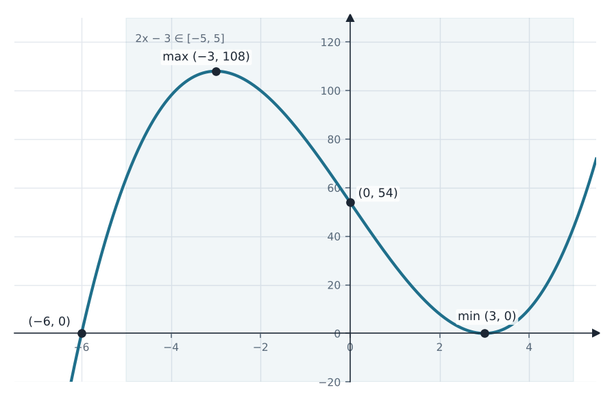
נסמן \(t = 2x-3\). כאשר \(x\) עובר על \([-1,4]\), \(t\) עובר על \([-5,5]\). לכן הערכים של \(g\) בתחום הם בדיוק הערכים של \(f\) בקטע \([-5,5]\).
בודקים את \(f\) בקצוות ובנקודות הקיצון שבקטע: \(f(-5) = 64\), \(f(-3) = 108\), \(f(3) = 0\), \(f(5) = 44\).
(1) הערך הגדול ביותר הוא 108, ב־\(t=-3\), כלומר \(2x-3=-3 \Rightarrow x=0\).
(2) הערך הקטן ביותר הוא 0, ב־\(t=3\), כלומר \(x=3\).
בדרך הנגזרת: \(g'(x) = 2f'(2x-3)\) מתאפסת כאשר \(2x-3=\pm3\), כלומר ב־\(x=0\) וב־\(x=3\), ובקצוות \(g(-1)=f(-5)=64\), \(g(4)=f(5)=44\). אותה תוצאה.
מקסימום מוחלט \((0,108)\), מינימום מוחלט \((3,0)\)
שימוש ב: קיצון מוחלט בקטע סגורגזירת f(ax+b)
\(f(x) = \dfrac{4x^{2} - 28x + 24}{2x^{2} - 13x + 15}\). מפרקים: \(f(x) = \dfrac{4(x-1)(x-6)}{(2x-3)(x-5)}\).
המכנה מתאפס ב־\(x=1.5\) וב־\(x=5\), והמונה לא מתאפס שם, ולכן אלה אסימפטוטות אנכיות.
מעלת המונה שווה למעלת המכנה, ולכן יש גם אסימפטוטה אופקית: \(y = \dfrac{4}{2} = 2\).
\(x=1.5\), \(x=5\), \(y=2\)
שימוש ב: אסימפטוטה אנכיתאסימפטוטה אופקית
המונה מתאפס ב־\(x=1\) וב־\(x=6\). \(f(0) = \dfrac{24}{15} = \dfrac85\).
\((1,0)\), \((6,0)\), \((0,\tfrac85)\)
כלל המנה, המונה של הנגזרת: \((8x-28)(2x^{2}-13x+15) - (4x^{2}-28x+24)(4x-13)\).
פותחים: \((16x^{3} - 160x^{2} + 484x - 420) - (16x^{3} - 164x^{2} + 460x - 312) = 4x^{2} + 24x - 108\).
\(f'(x) = \dfrac{4(x+9)(x-3)}{(2x-3)^{2}(x-5)^{2}}\). המכנה חיובי, ולכן הסימן נקבע לפי המונה.
| x | \(x<-9\) | \(-9\) | \(-9<x<1.5\) | \(1.5<x<3\) | \(3\) | \(3<x<5\) | \(x>5\) |
|---|---|---|---|---|---|---|---|
| f′ | + | 0 | − | − | 0 | + | + |
| f | ↗ | מקס' | ↘ | ↘ | מינ' | ↗ | ↗ |
\(f(-9) = \dfrac{600}{294} = \dfrac{100}{49}\), \(f(3) = \dfrac{-24}{-6} = 4\).
ערך המינימום גדול מערך המקסימום. זה אפשרי כי הן נמצאות על ענפים שונים של הגרף, משני צדי האסימפטוטה.
מקסימום \((-9,\tfrac{100}{49})\), מינימום \((3,4)\)
שימוש ב: כלל המנהנקודות קיצון
מטבלת הסימנים, ובלי הנקודות שאינן בתחום ההגדרה.
עולה: \(x<-9\), \(3<x<5\), \(x>5\) · יורדת: \(-9<x<1.5\), \(1.5<x<3\)
שימוש ב: עלייה וירידה
שימו לב: משמאל הגרף חוצה את האסימפטוטה האופקית. \(f(x)=2 \Rightarrow 4x^{2}-28x+24 = 4x^{2}-26x+30 \Rightarrow x=-3\). אחר כך הוא עולה מעט מעליה (המקסימום \(\tfrac{100}{49}\approx2.04\)) וחוזר אליה.
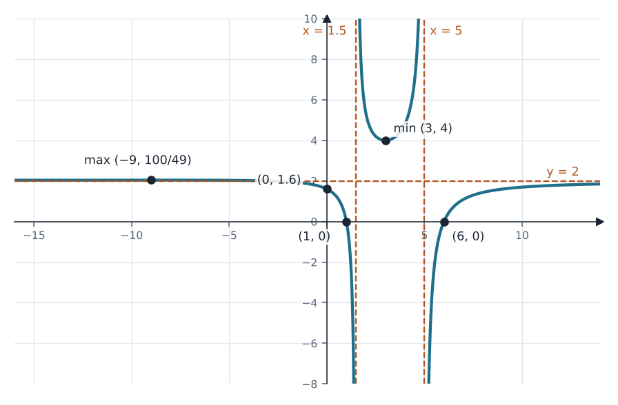
הזזה של 2 יחידות למטה. האסימפטוטות האנכיות נשארות, האופקית עוברת ל־\(y=0\), הקיצון עובר ל־\((-9,\tfrac{2}{49})\) ול־\((3,2)\), ונקודת החיתוך עם ציר \(y\) היא \((0,-\tfrac25)\). החיתוך עם ציר \(x\) הוא ב־\(x=-3\), הנקודה שבה \(f=2\).
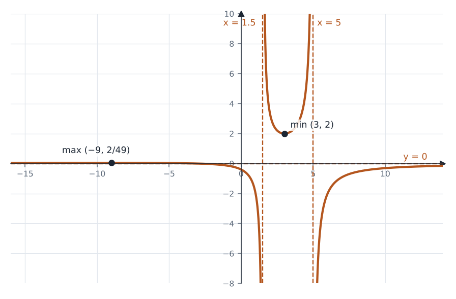
שימוש ב: הזזה אנכית
\(f(x) = \dfrac{2x^{4}}{x^{4} - 2x^{2} + 1} = \dfrac{2x^{4}}{(x^{2}-1)^{2}}\).
אנכיות: \(x=\pm1\) (המונה \(2\neq0\) שם). אופקית: המעלות שוות (4 ו־4), ולכן \(y = \dfrac21 = 2\).
\(x=1\), \(x=-1\), \(y=2\)
שימוש ב: אסימפטוטה אנכיתאסימפטוטה אופקית
\(2x^{4} = 0 \Leftrightarrow x = 0\), ו־\(f(0)=0\).
\((0,0)\)
\(f'(x) = \dfrac{8x^{3}(x^{2}-1)^{2} - 2x^{4}\cdot2(x^{2}-1)\cdot2x}{(x^{2}-1)^{4}} = \dfrac{8x^{3}(x^{2}-1)\left[(x^{2}-1) - x^{2}\right]}{(x^{2}-1)^{4}} = \dfrac{-8x^{3}}{(x^{2}-1)^{3}}\).
\(f'(x)=0 \Leftrightarrow x=0\). ליד 0 המכנה \((x^{2}-1)^{3}\) שלילי, ולכן הנגזרת שלילית משמאל ל־0 וחיובית מימין.
מינימום \((0,0)\)
שימוש ב: כלל המנהנקודות קיצון
| x | \(x<-1\) | \(-1<x<0\) | \(0<x<1\) | \(x>1\) |
|---|---|---|---|---|
| \(-8x^{3}\) | + | + | − | − |
| \((x^{2}-1)^{3}\) | + | − | − | + |
| f′ | + | − | + | − |
| f | ↗ | ↘ | ↗ | ↘ |
עולה: \(x<-1\), \(0<x<1\) · יורדת: \(-1<x<0\), \(x>1\)
שימוש ב: עלייה וירידה
\(\dfrac{2x^{4}}{(x^{2}-1)^{2}} = 2 \Rightarrow x^{4} = x^{4} - 2x^{2} + 1 \Rightarrow x^{2} = \dfrac12 \Rightarrow x = \pm\dfrac{1}{\sqrt2} = \pm\dfrac{\sqrt2}{2}\).
\(\left(\tfrac{\sqrt2}{2},2\right)\), \(\left(-\tfrac{\sqrt2}{2},2\right)\)
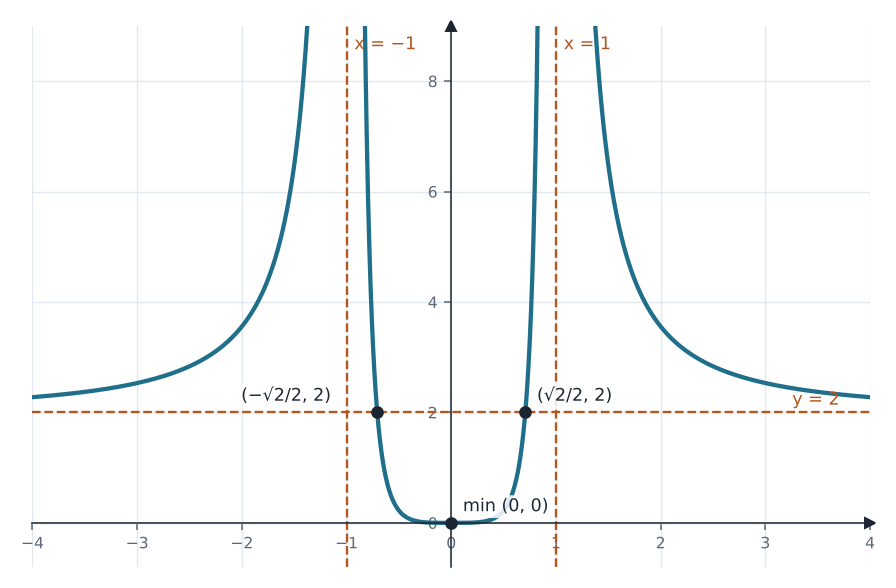
כאשר \(x\to\pm\infty\), \(f(x)\to2\) ולכן \(g(x)\to 2\cdot2 + c = 4+c\). \(4+c = 5 \Rightarrow c=1\).
\(c=1\)
שימוש ב: מתיחה והזזה
\(f(x) = \dfrac{2x+a}{x^{4}-1}\), והגרף עובר בנקודה \((0,1)\).
\(f(0) = \dfrac{a}{-1} = 1 \Rightarrow a = -1\).
\(a=-1\), כלומר \(f(x) = \dfrac{2x-1}{x^{4}-1}\)
(1) \(x^{4} = 1 \Leftrightarrow x=\pm1\).
(2) \(2x-1=0 \Rightarrow x=\tfrac12\), ו־\(f(0)=1\).
(3) ב־\(x=\pm1\) המונה שונה מ־0 (\(1\) ו־\(-3\)), ולכן אלה אסימפטוטות אנכיות.
\(x\neq\pm1\) · \((\tfrac12,0)\), \((0,1)\) · \(x=1\), \(x=-1\)
(1) \(g'(x) = -24x^{3} + 12x^{2} = -12x^{2}(2x-1)\), מתאפסת ב־\(x=0\) וב־\(x=\tfrac12\).
| x | \(x<0\) | \(0\) | \(0<x<\tfrac12\) | \(\tfrac12\) | \(x>\tfrac12\) |
|---|---|---|---|---|---|
| g′ | + | 0 | + | 0 | − |
| g | ↗ | אין קיצון | ↗ | מקס' | ↘ |
\(g(\tfrac12) = -\tfrac{6}{16} + \tfrac{4}{8} - 2 = -\tfrac{15}{8}\). ב־\(x=0\) הנגזרת לא מחליפה סימן, ולכן אין שם קיצון.
(2) הוכחה ש־\(f\) יורדת. כלל המנה:
\(f'(x) = \dfrac{2(x^{4}-1) - (2x-1)\cdot4x^{3}}{(x^{4}-1)^{2}} = \dfrac{-6x^{4} + 4x^{3} - 2}{(x^{4}-1)^{2}} = \dfrac{g(x)}{(x^{4}-1)^{2}}\).
הערך הגדול ביותר של \(g\) הוא \(-\tfrac{15}{8}\) (המקסימום היחיד, ו־\(g\to-\infty\) בשני הקצוות), ולכן \(g(x)<0\) לכל \(x\). המכנה חיובי, ולכן \(f'(x)<0\) בכל תחום ההגדרה, ו־\(f\) יורדת בכל אחד מקטעי התחום.
מקסימום של g: \((\tfrac12,-\tfrac{15}{8})\)
שימוש ב: נקודות קיצוןכלל המנהעלייה וירידה
אסימפטוטות אנכיות \(x=\pm1\), ואסימפטוטה אופקית \(y=0\) (מעלת המונה קטנה ממעלת המכנה). בכל אחד משלושת הענפים הגרף יורד.
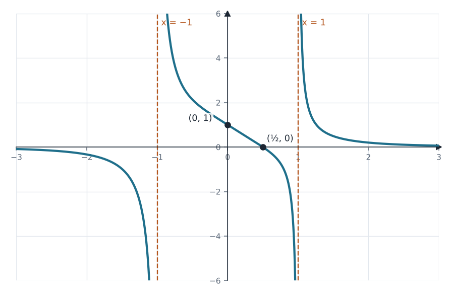
שימוש ב: אסימפטוטה אופקית
הסימן של \(f\) קובע היכן \(h\) עולה. סימן המונה \(2x-1\) וסימן המכנה \(x^{4}-1\):
| x | \(x<-1\) | \(-1<x<\tfrac12\) | \(\tfrac12\) | \(\tfrac12<x<1\) | \(x>1\) |
|---|---|---|---|---|---|
| \(2x-1\) | − | − | 0 | + | + |
| \(x^{4}-1\) | + | − | − | − | + |
| h′ = f | − | + | 0 | − | + |
| h | ↘ | ↗ | מקס' | ↘ | ↗ |
(1) בתוך התחום, \(h'\) מתאפסת ומחליפה סימן רק ב־\(x=\tfrac12\), מ־+ ל־−.
(1) מקסימום ב־\(x=\tfrac12\) · (2) עולה: \(-1<x<\tfrac12\), \(x>1\) · יורדת: \(x<-1\), \(\tfrac12<x<1\)
שימוש ב: h′ = f
\(f(x) = \dfrac{n(x-10)}{(x-5)^{2} - 16}\), \(n>0\). מפרקים את המכנה כהפרש ריבועים: \((x-5)^{2}-16 = (x-9)(x-1)\).
(1) המכנה מתאפס ב־\(x=1\) וב־\(x=9\).
(2) אנכיות: \(x=1\), \(x=9\) (המונה \(-9n\) ו־\(-n\), שונה מ־0). אופקית: מעלת המונה 1 קטנה ממעלת המכנה 2, ולכן \(y=0\).
(3) \(f(x)=0 \Leftrightarrow x=10\). \(f(0) = \dfrac{-10n}{25-16} = -\dfrac{10n}{9}\).
(4) חיתוך עם האסימפטוטה \(y=0\) הוא בדיוק חיתוך עם ציר \(x\). המונה מתאפס רק ב־\(x=10\), ולכן יש נקודת חיתוך אחת בלבד.
\(x\neq1,9\) · \(x=1\), \(x=9\), \(y=0\) · \((10,0)\), \((0,-\tfrac{10n}{9})\) · חיתוך עם האסימפטוטה: \((10,0)\)
השלמה: בקובץ נעלם שם הפרמטר \(b\) בתנאי "\(>0\)".
\(g\) שווה ל־\(f\) בכל מקום, חוץ מ־\(x=b\) שבו היא לא מוגדרת. שם נוצר "חור" בגרף.
(1) ל־\(f\) יש נקודת חיתוך אחת עם \(y=0\), והיא \((10,0)\). כדי שלגרף של \(g\) לא תהיה נקודת חיתוך עם האסימפטוטה, צריך להוציא בדיוק את הנקודה הזו: \(b=10\).
(2) \(g(5) = f(5) = \dfrac{n(-5)}{0-16} = \dfrac{5n}{16} = 5 \Rightarrow n = 16\).
\(b=10\), \(n=16\)
שימוש ב: נקודת אי־רציפות ("חור")
(1) כלל המנה, עם מכנה \(x^{2}-10x+9\):
\(g'(x) = 16\cdot\dfrac{(x^{2}-10x+9) - (x-10)(2x-10)}{(x-1)^{2}(x-9)^{2}} = \dfrac{16(-x^{2}+20x-91)}{(x-1)^{2}(x-9)^{2}} = \dfrac{-16(x-7)(x-13)}{(x-1)^{2}(x-9)^{2}}\).
\(g'\) חיובית בין 7 ל־13 (חוץ מהנקודות שמחוץ לתחום) ושלילית מחוץ לקטע הזה.
\(g(7) = \dfrac{16(-3)}{6\cdot(-2)} = 4\) (מעבר מ־− ל־+, מינימום). \(g(13) = \dfrac{16\cdot3}{12\cdot4} = 1\) (מעבר מ־+ ל־−, מקסימום).
(2) בסקיצה מסמנים עיגול ריק ב־\((10,0)\), הנקודה שהוצאה.
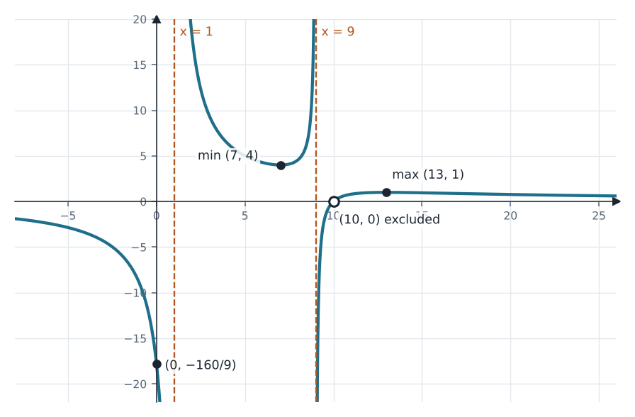
מינימום \((7,4)\), מקסימום \((13,1)\)
שימוש ב: כלל המנהנקודות קיצון
\(f(x) = \dfrac{n(x-11)^{2}(x-7)}{(x-13)^{2}(x-k)}\), \(n,k>0\). הישר \(x=13\) הוא האסימפטוטה האנכית היחידה, ויש לגרף בדיוק נקודת חיתוך אחת עם ציר \(x\).
השלמה: בקובץ נעלם שם הפרמטר \(k\).
אם \(k\) שונה מ־7, 11 ו־13, הישר \(x=k\) הוא אסימפטוטה אנכית נוספת, בסתירה לנתון. לכן בודקים שלושה מקרים:
• \(k=13\): אין אסימפטוטה נוספת, אבל המונה מתאפס גם ב־11 וגם ב־7, כלומר שתי נקודות חיתוך. לא מתאים.
• \(k=7\): הגורם \((x-7)\) מצטמצם (חור ב־\(x=7\)), ונשאר אפס יחיד ב־\(x=11\). מתאים.
• \(k=11\): גורם אחד \((x-11)\) מצטמצם, ו־\(x=11\) מחוץ לתחום, ולכן נשאר אפס יחיד ב־\(x=7\). מתאים.
\(k=7\) או \(k=11\)
שימוש ב: אסימפטוטה אנכית ו"חור"
(1) המכנה \((x-13)^{2}(x-7)\) מתאפס ב־7 וב־13. אחרי צמצום: \(f(x) = \dfrac{n(x-11)^{2}}{(x-13)^{2}}\), \(x\neq7\).
(2) \(f'(x) = n\cdot\dfrac{2(x-11)(x-13)^{2} - (x-11)^{2}\cdot2(x-13)}{(x-13)^{4}} = \dfrac{2n(x-11)\left[(x-13)-(x-11)\right]}{(x-13)^{3}} = \dfrac{-4n(x-11)}{(x-13)^{3}}\).
מתאפסת ב־\(x=11\). משמאל ל־11 (למשל \(x=10\)) הנגזרת שלילית, ומימין (למשל \(x=12\)) חיובית, ולכן זה מינימום. גם בלי חישוב: \(f\ge0\) ו־\(f(11)=0\).
(3) \((11,0)\), ו־\(f(0) = \dfrac{121n}{169}\).
(4) המעלות במונה ובמכנה שוות, ולכן \(y = \dfrac{n}{1} = n\).
(5) בסקיצה מסמנים חור ב־\(x=7\): \(\left(7,\ \tfrac{16n}{36}\right) = \left(7,\ \tfrac{4n}{9}\right)\). הגרף מצויר עבור \(n=3\) (מסעיף ג).
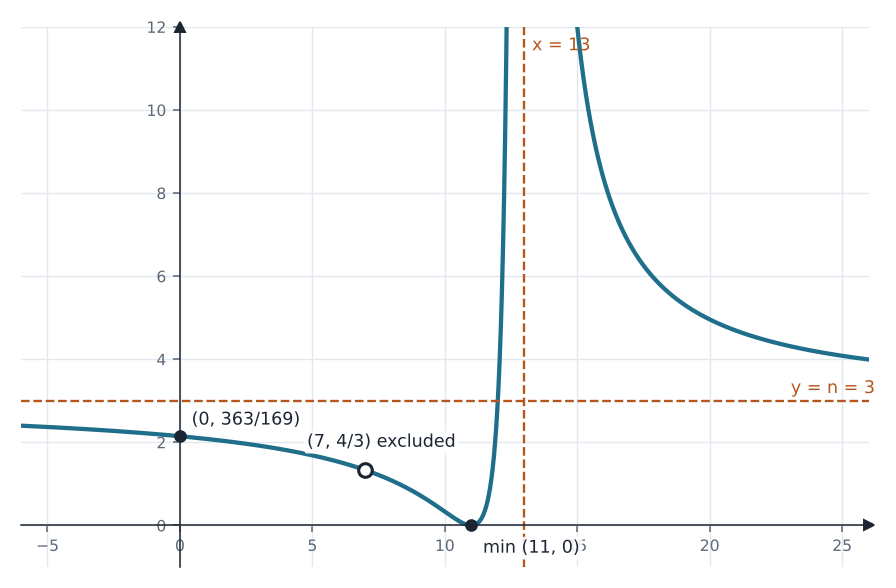
\(x\neq7,13\) · מינימום \((11,0)\) · \((11,0)\), \((0,\tfrac{121n}{169})\) · \(y=n\)
שימוש ב: כלל המנהנקודות קיצוןאסימפטוטה אופקית
\(\dfrac{121n}{169} = \dfrac{363}{169} \Rightarrow n = 3\).
\(n=3\)
(1) \(g(x) = 3(x-11)^{2}\), אבל בתחום של \(f\) בלבד, כלומר \(x\neq7,13\). זו פרבולה עם קדקוד \((11,0)\) ועם שני חורים: \((7,48)\) ו־\((13,12)\).
(2) עבור \(L<0\) אין חיתוך. עבור \(L=0\) יש נקודה אחת, הקדקוד. עבור \(L>0\) הישר חותך את הפרבולה בשתי נקודות, \(x = 11\pm\sqrt{L/3}\), אלא אם אחת מהן היא חור:
\(L=48\): הנקודות \(x=7\) (חור) ו־\(x=15\), ולכן נשארת אחת. \(L=12\): הנקודות \(x=13\) (חור) ו־\(x=9\), ולכן נשארת אחת.
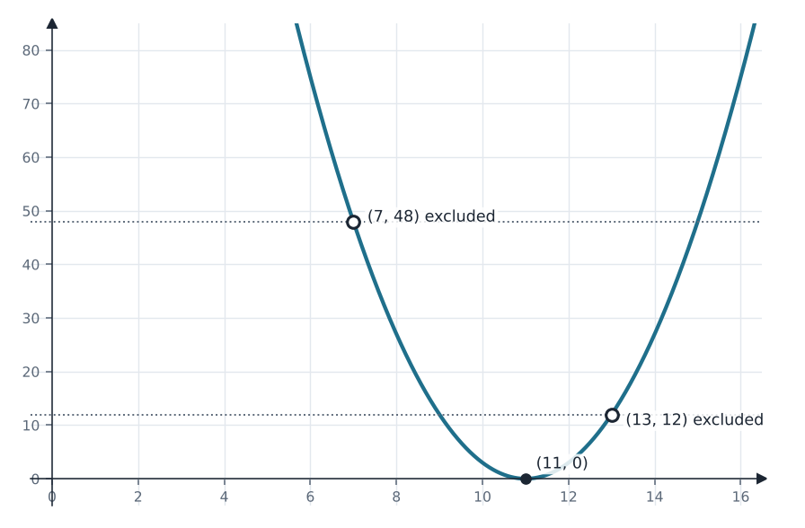
\(L=0\), \(L=12\), \(L=48\)
\(f(x) = \dfrac{x^{4}+ax^{2}+b}{x^{5}-4x^{3}}\). לפונקציה שתי נקודות אי־רציפות סליקה, היא עוברת ב־\((1,0)\), ויש לה אסימפטוטה אנכית אחת בלבד.
המכנה: \(x^{3}(x^{2}-4) = x^{3}(x-2)(x+2)\), ומתאפס ב־\(0,\ 2,\ -2\).
ב־\(x=0\) לא יכול להיות חור: צריך לצמצם \(x^{3}\), ואז \(a=b=0\) ו־\(f=\tfrac{1}{x}\), שלא עוברת ב־\((1,0)\). לכן החורים ב־\(x=\pm2\), והמונה מתאפס שם.
\(16 + 4a + b = 0\), ומהנקודה \((1,0)\): \(1 + a + b = 0\). מחסרים: \(15 + 3a = 0 \Rightarrow a=-5\), ואז \(b=4\).
בדיקה: \(x^{4}-5x^{2}+4 = (x^{2}-1)(x^{2}-4)\), ולכן \(f(x) = \dfrac{x^{2}-1}{x^{3}}\), \(x\neq\pm2\). נשארה אסימפטוטה אחת, \(x=0\).
\(a=-5\), \(b=4\)
שימוש ב: אסימפטוטה ו"חור"
תחום: \(x\neq0,\ \pm2\). אסימפטוטה אנכית: \(x=0\). חיתוך: \(x^{2}-1=0 \Rightarrow x=\pm1\). אין חיתוך עם ציר \(y\), כי 0 לא בתחום.
\(x\neq0,\pm2\) · \(x=0\) · \((1,0)\), \((-1,0)\)
\(f'(x) = \dfrac{2x\cdot x^{3} - (x^{2}-1)\cdot3x^{2}}{x^{6}} = \dfrac{3-x^{2}}{x^{4}}\), מתאפסת ב־\(x=\pm\sqrt3\).
\(x^{4}>0\), ולכן \(f'>0\) כאשר \(|x|<\sqrt3\) ו־\(f'<0\) כאשר \(|x|>\sqrt3\).
\(f(\sqrt3) = \dfrac{2}{3\sqrt3} = \dfrac{2\sqrt3}{9}\) (מקסימום), ו־\(f(-\sqrt3) = -\dfrac{2\sqrt3}{9}\) (מינימום).
מקסימום \(\left(\sqrt3,\tfrac{2\sqrt3}{9}\right)\), מינימום \(\left(-\sqrt3,-\tfrac{2\sqrt3}{9}\right)\)
שימוש ב: כלל המנהנקודות קיצון
הפונקציה אי־זוגית, והגרף סימטרי לראשית. אסימפטוטה אופקית \(y=0\). החורים: \(f(2) = \tfrac38\) ו־\(f(-2) = -\tfrac38\).
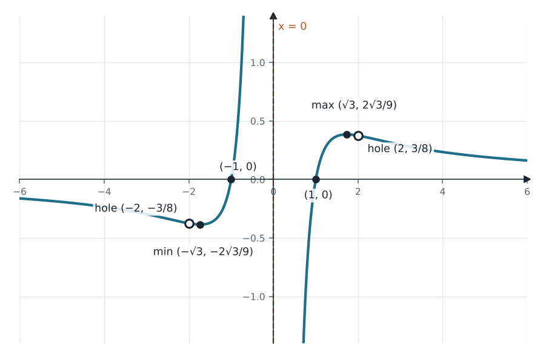
שימוש ב: אי־זוגיתאסימפטוטה אופקית
נסמן \(M = \tfrac{2\sqrt3}{9}\approx0.385\). שימו לב ש־\(\tfrac38 = 0.375\) קטן מ־\(M\).
הענף הימני (\(x>0\)): עולה מ־\(-\infty\) עד \(M\), ואז יורד ושואף ל־0 מלמעלה. על החלק היורד, בגובה \(\tfrac38\), יש חור. לכן מספר נקודות החיתוך עם \(y=k\) בענף הימני הוא:
• 1 עבור \(k\le0\) • 2 עבור \(0<k<M\), חוץ מ־\(k=\tfrac38\) שבו יש 1 • 1 עבור \(k=M\) • 0 עבור \(k>M\).
הענף השמאלי הוא שיקוף סימטרי לראשית. לכן מספר הנקודות הכולל עבור \(k\) שווה למספר עבור \(-k\).
| k | \(0\) | \(0<k<\tfrac38\) | \(\tfrac38\) | \(\tfrac38<k<M\) | \(M\) | \(k>M\) |
|---|---|---|---|---|---|---|
| ימני | 1 | 2 | 1 | 2 | 1 | 0 |
| שמאלי | 1 | 1 | 1 | 1 | 1 | 1 |
| סה״כ | 2 | 3 | 2 | 3 | 2 | 1 |
(1) שתי נקודות: \(k = 0,\ \pm\tfrac38,\ \pm\tfrac{2\sqrt3}{9}\).
(2) נקודה אחת: \(|k| > \tfrac{2\sqrt3}{9}\).
(3) \(|f(x)| = k\). עבור \(k<0\) אין פתרון, ועבור \(k=0\) יש 2 (\(x=\pm1\)). עבור \(k>0\) הפתרונות הם של \(f=k\) ושל \(f=-k\), ובגלל הסימטריה מספרם כפול ממספר הפתרונות של \(f=k\). כדי לקבל 4 צריך בדיוק 2 פתרונות ל־\(f=k\) עם \(k>0\).
(1) \(k\in\{0,\ \pm\tfrac38,\ \pm\tfrac{2\sqrt3}{9}\}\) · (2) \(|k|>\tfrac{2\sqrt3}{9}\) · (3) \(k=\tfrac38\) או \(k=\tfrac{2\sqrt3}{9}\)
שימוש ב: עלייה וירידהסימטריה לראשית"חור"
\(f(x) = \dfrac{x^{2}-4x+4}{x-3} = \dfrac{(x-2)^{2}}{x-3}\).
(1) \(x\neq3\). (2) אסימפטוטה אנכית \(x=3\) (המונה שם \(1\neq0\)).
(3) \((x-2)^{2}=0 \Rightarrow x=2\). \(f(0) = \dfrac{4}{-3}\).
(4) \(f'(x) = \dfrac{2(x-2)(x-3) - (x-2)^{2}}{(x-3)^{2}} = \dfrac{(x-2)(2x-6-x+2)}{(x-3)^{2}} = \dfrac{(x-2)(x-4)}{(x-3)^{2}}\).
| x | \(x<2\) | \(2\) | \(2<x<3\) | \(3<x<4\) | \(4\) | \(x>4\) |
|---|---|---|---|---|---|---|
| f′ | + | 0 | − | − | 0 | + |
| f | ↗ | מקס' | ↘ | ↘ | מינ' | ↗ |
\(f(2)=0\), \(f(4) = \dfrac{4}{1} = 4\).
\(x\neq3\) · \(x=3\) · \((2,0)\), \((0,-\tfrac43)\) · מקסימום \((2,0)\), מינימום \((4,4)\)
שימוש ב: אסימפטוטה אנכיתכלל המנהנקודות קיצון
אפשר לכתוב \(f(x) = x - 1 + \dfrac{1}{x-3}\), ולכן הגרף מתקרב לישר המשופע \(y=x-1\) (מסומן בקו מנוקד, לא נדרש בשאלה).
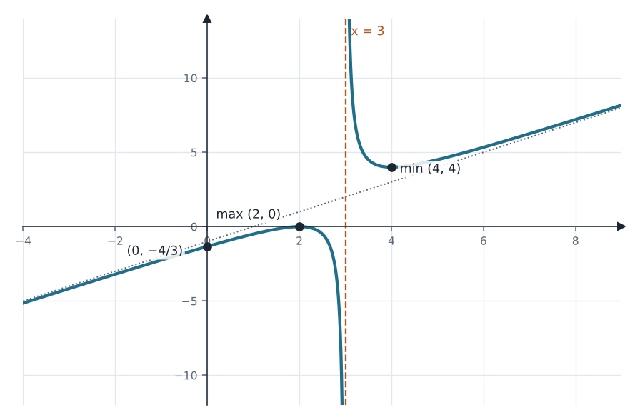
מכנה משותף: \(g'(x) = \dfrac{2(x-2)^{2} + (x-3)}{2(x-3)} = \dfrac{2x^{2} - 7x + 5}{2(x-3)} = \dfrac{(2x-5)(x-1)}{2(x-3)}\).
| x | \(x<1\) | \(1<x<2.5\) | \(2.5<x<3\) | \(x>3\) |
|---|---|---|---|---|
| \((2x-5)(x-1)\) | + | − | + | + |
| \(x-3\) | − | − | − | + |
| g′ | − | + | − | + |
| g | ↘ | ↗ | ↘ | ↗ |
עולה: \(1<x<2.5\), \(x>3\) · יורדת: \(x<1\), \(2.5<x<3\)
שימוש ב: g′ נתונה: הסימן קובע